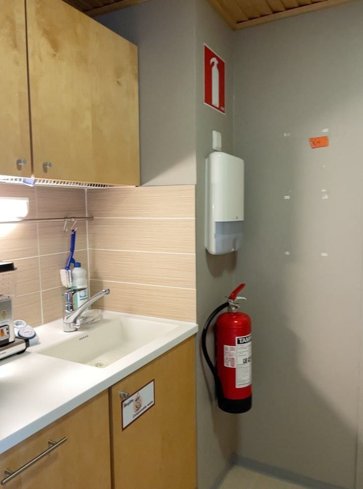

Abstract
3D Gaussian Splatting (3DGS) has achieved excellent rendering quality with fast training and rendering speed. However, its optimization process lacks explicit geometric constraints, leading to suboptimal geometric reconstruction in regions with sparse or no observational input views. In this work, we try to mitigate the issue by incorporating a pre-trained matching prior to the 3DGS optimization process. We introduce Flow Distillation Sampling (FDS), a technique that leverages pre-trained geometric knowledge to bolster the accuracy of the Gaussian radiance field. Our method employs a strategic sampling technique to target unobserved views adjacent to the input views, utilizing the optical flow calculated from the matching model (Prior Flow) to guide the flow analytically calculated from the 3DGS geometry (Radiance Flow). Comprehensive experiments in depth rendering, mesh reconstruction, and novel view synthesis showcase the significant advantages of FDS over state-of-the-art methods. Additionally, our interpretive experiments and analysis aim to shed light on the effects of FDS on geometric accuracy and rendering quality, potentially providing readers with insights into its performance.
Pipeline of the proposed FDS.
This work was supported by National Key R&D Program of China (2023YFB3209702), the National Natural Science Foundation of China (62441204, 62472213), and Gusu Innovation & Entrepreneurship Leading Talents Program (ZXL2024361)
@inproceedings{chen2024fds,
title={Flow Distillation Sampling: Regularizing 3D Gaussians with Pre-trained Matching Priors},
author={Lin-Zhuo Chen and Kangjie Liu and Youtian Lin and Zhihao Li and Siyu Zhu and Xun Cao and Yao Yao},
booktitle={ICLR},
year={2025}
}